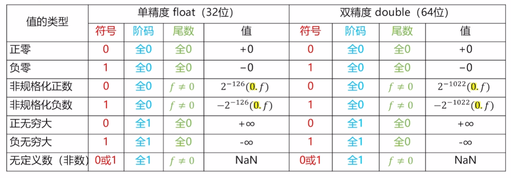
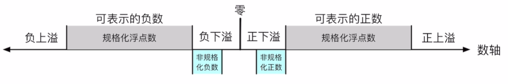

浮点数的表示(IEEE754)
IEEE浮点标准用 V=(−1)s×M×2E 来表示一个数
整个存储结构分为了三个部分
- 符号位 (sign) ： 决定这个数是正数还是负数， 1 表示负数， 0 表示正数 (是为了方便比较，我们可以直接使用补码的大小比较元件进行比较)
- 阶码（exponent）： 对浮点数加权，这个权重就是 $2^E$
- 尾数（significand）： 是一个二进制小数，实质的表示具体的值
我们用下面的例子来表示 IEEE754 的规格化数据的表示
将 426.41269 用 IEEE 浮点表示法表示：
先将这个数字以小数点为分割后用二进制表示： 110101010.01101011001100110011001100110011
这个数字同样可以表示为 ： 1.10101010011010110011001100110011×28
关于小数部分的小数，我们对 0.41269 求二进制的步骤如下：
0.41269×2=0.82538 ，取整数部分 0，余数 0.82538
0.82538×2=1.65076，取整数部分 1，余数 0.65076
0.65076×2=1.30152，取整数部分 1，余数 0.30152
…
我们发现这个数是正数， 所以符号位为 0
我们发现 E 是 8 ，不过为了方便计算和比较，我们一般都会加上偏置然后再存储
对于阶码为 k 位的表示来说， 偏置值为 2k−1−1
对于一个 32 位表示,来说， 这个偏置为 127 ， 所以我们要存储的十进制是 135, 二进制为： 10000111
对于典型的 float 来说，一共占 32 个位，所以最后表示为(我们用 | 来分割三个部分)
0∣10000111∣10101010011010110011001
对于规格化的小数， 我们隐含的表示最高位的 1 不表示
单精度和双精度浮点数所占的字节数不同，
单精度浮点格式（float ）⇒ s、exp和frac字段分别为1位、k=8位和n=23位，得到一个32位表示
双精度浮点格式（double） ⇒ s、exp和frac字段分别为1位、k=11位和n=52位，得到一个64位表示
除了规格化小数， 还有非规格化小数：

各种边界值

规格化的正小数所能表示的最大值为: 0∣1111110∣111...111=1.1111...×2127=(2−2−23)×2127
规格化的负小数所能表示的最小值为: 1∣1111110∣111...111=−1.1111...×2127=−(2−2−23)×2127
规格化的正小数所能表示的最小值为： 0∣00000001∣000...000=1.00×2−126
规格化的负小数所能表示的最大值为: 1∣00000001∣000...000=−1.00×2−126
非规格化的正小数所能表示的最大值为: 0∣00000000∣111...111=0.111...111×2−126=(1−2−23)×2−126
非规格化的正小数所能表示的最小值为: 0∣00000000∣000...001=0.000...001×2−126=2−23×2−126
非规格化的负小数所能表示的最小值为: 1∣00000000∣111...111=−0.111...111×2−126=−(1−2−23)×2−126
非规格化的负小数所能表示的最大值为: 1∣00000000∣000...001=−0.000...001×2−126=−2−23×2−126
注意事项
如果是浮点小数除法除以 0.00, 那么得到的结果是 无穷(具体哪个无穷看正负)
0/0√−1∞−∞ 这些才是结果为 NAN
当值越过了靠近 0 的边界的时候, 会直接变成 0, 正负取决于从哪边越过
如果超出了外边界,则变成无穷
阶码加上偏置的原因
对浮点数进行比较时，使用偏置阶码可以直接按位比较两个浮点数的二进制表示，就像比较无符号整数一样
便于处理次正规数和零, 如果阶码不使用偏置，直接表示真值，那么最小的正数（非零）可能需要一个负的阶码，这会使得对零和次正规数的特殊处理变得复杂
可以很方便地通过检查阶码的特殊模式来检测浮点数的下溢（underflow） 或溢出（overflow）
浮点数的舍入规则
浮点数的舍入规则其实还算比较简单，我们称这种方法为 偶数舍入法
首先偶数舍入法实际上是向上舍入和向下舍入的延深：
- 如果当前数值更靠近向上舍入的数值， 那么我们就向上舍入
- 如果当前数值更加靠经向下舍入的结果，我们就向下舍入
- 如果刚好是在最中间，我们就舍入到尾数尾偶数的结果
我们举一些简单的例子大家就明白了：我们考虑的情况全是四位小数舍入到两位小数的结果：
10.000112 会舍入到 10.002
10.001102 会舍入到 10.012
10.111002 会舍入到 11.002
向上舍入的结果为 11.002 ， 向下舍入的结果为 10.112, 他们的中间值刚好是 10.1112
因为希望尾数为偶数， 所以舍入到 11.002
10.101002 会舍入到 10.102
向上舍入的结果为 10.112 ， 向下舍入的结果为 10.102, 他们的中间值刚好是 10.1012
因为希望尾数为偶数， 所以舍入到 10.102